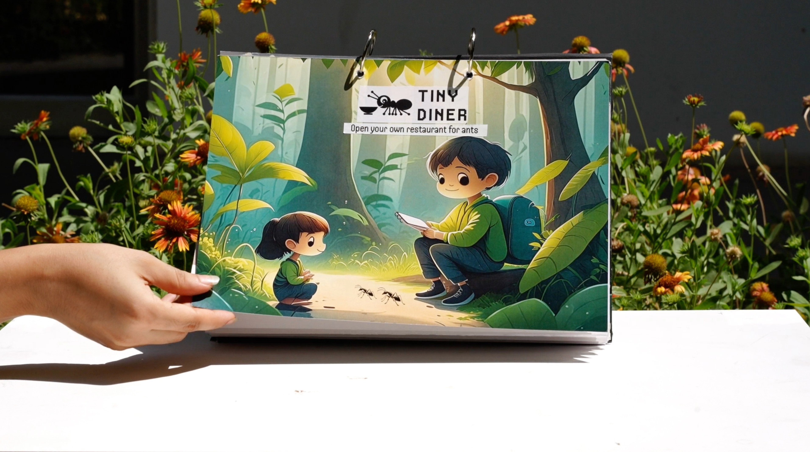

The Artifact is a play-based interaction between children and ants to foster empathy for ants amongst children. It consists of a pop-up book with chapters about ant behaviour, recipies to feed the ants and restuarant setups that can be placed outdoors.
Through its design, the restaurant questions non anthropocentricity in the design process and explores the boundaries of non-human centric interaction design. You can use italics for emphasis or bold for key ideas.

* caption for the image above.
The problem
The context of the problem came from children's perception of insects. Children's lack of empathy towards invertebrates stems from negative perceptions of insects amongst adults around. In addition to this invertebrates lack the familiar features that other mammals possess that make them appealing towards children.
Continue writing here. Add as many paragraphs as you need.
Design Process
Add more content here about another aspect of the project.
colophon
work done: research, concept, design
functioning as: your role
footnotes:
1. Add your first footnote here.
2. Add your second footnote here.